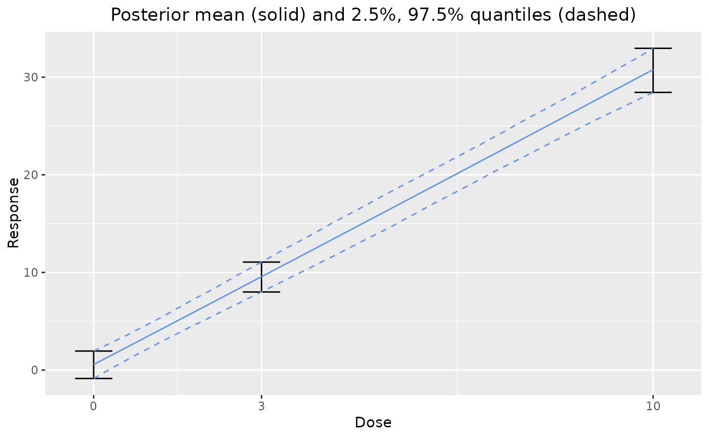

This function performs Bayesian model averaging with a selection of dose response models. See model for all possible models.
dreamer_mcmc(
data,
...,
n_adapt = 1000,
n_burn = 1000,
n_iter = 10000,
n_chains = 4,
silent = FALSE,
convergence_warn = TRUE
)a dataframe with column names of "dose" and "response" for individual patient data. Optional columns "n" and "sample_var" can be specified if aggregate data is supplied, but it is recommended that patient-level data be supplied where possible for continuous models, as the posterior weights differ if aggregated data is used. For aggregated continuous data, "response" should be the average of "n" subjects with a sample variance of "sample_var". For aggregated binary data, "response" should be the number of successes, "n" should be the total number of subjects (the "sample_var" column is irrelevant in binary cases and is ignored).
model definitions created using the model creation functions in model. If arguments are named, the names are retained in the return values.
the number of MCMC iterations to tune the MCMC algorithm.
the number of burn-in MCMC samples.
the number of MCMC samples to collect after tuning and burn-in.
the number of separate, independent, MCMC chains to run.
logical indicating if MCMC progress bars should be suppressed.
logical (default TRUE) indicating if the
Gelman-Rubin diagnostics should be run to detect convergence issues.
Warnings are thrown if the upper bound of the Gelman-Rubin statistic
is greater than 1.1.
A named list with S3 class "dreamer_bma" and "dreamer". The list contains the following fields:
doses: a vector of the unique ordered doses in the data.
times: a vector of the unique ordered times in the data.
w_prior: a named vector with the prior probabilities of each model.
w_post: a named vector with the posterior probabilities of each model.
The individual MCMC fits for each model.
The Bayesian model averaging approach uses data, multiple models, priors on each model's parameters, and a prior weight for each model. Using these inputs, each model is fit independently, and the output from the models is used to calculate posterior weights for each model. See Gould (2018) for details.
Gould, A. L. (2019). BMA-Mod: A Bayesian model averaging strategy for determining dose-response relationships in the presence of model uncertainty. Biometrical Journal, 61(5), 1141-1159.
set.seed(888)
data <- dreamer_data_linear(
n_cohorts = c(20, 20, 20),
dose = c(0, 3, 10),
b1 = 1,
b2 = 3,
sigma = 5
)
# Bayesian model averaging
output <- dreamer_mcmc(
data = data,
n_adapt = 1e3,
n_burn = 1e2,
n_iter = 1e3,
n_chains = 2,
silent = TRUE,
mod_linear = model_linear(
mu_b1 = 0,
sigma_b1 = 1,
mu_b2 = 0,
sigma_b2 = 1,
shape = 1,
rate = .001,
w_prior = 1 / 2
),
mod_quad = model_quad(
mu_b1 = 0,
sigma_b1 = 1,
mu_b2 = 0,
sigma_b2 = 1,
mu_b3 = 0,
sigma_b3 = 1,
shape = 1,
rate = .001,
w_prior = 1 / 2
)
)
# posterior weights
output$w_post
#> mod_linear mod_quad
#> 0.7036919 0.2963081
# plot posterior dose response
plot(output)

# LONGITUDINAL
library(ggplot2)
set.seed(889)
data_long <- dreamer_data_linear(
n_cohorts = c(10, 10, 10, 10), # number of subjects in each cohort
doses = c(.25, .5, .75, 1.5), # dose administered to each cohort
b1 = 0, # intercept
b2 = 2, # slope
sigma = .5, # standard deviation,
longitudinal = "itp",
times = c(0, 12, 24, 52),
t_max = 52, # maximum time
a = .5,
c1 = .1
)
if (FALSE) { # \dontrun{
ggplot(data_long, aes(time, response, group = dose, color = factor(dose))) +
geom_point()
} # }
output_long <- dreamer_mcmc(
data = data_long,
n_adapt = 1e3,
n_burn = 1e2,
n_iter = 1e3,
n_chains = 2,
silent = TRUE, # make rjags be quiet,
mod_linear = model_linear(
mu_b1 = 0,
sigma_b1 = 1,
mu_b2 = 0,
sigma_b2 = 1,
shape = 1,
rate = .001,
w_prior = 1 / 2, # prior probability of the model
longitudinal = model_longitudinal_itp(
mu_a = 0,
sigma_a = 1,
a_c1 = 0,
b_c1 = 1,
t_max = 52
)
),
mod_quad = model_quad(
mu_b1 = 0,
sigma_b1 = 1,
mu_b2 = 0,
sigma_b2 = 1,
mu_b3 = 0,
sigma_b3 = 1,
shape = 1,
rate = .001,
w_prior = 1 / 2,
longitudinal = model_longitudinal_linear(
mu_a = 0,
sigma_a = 1,
t_max = 52
)
)
)
if (FALSE) { # \dontrun{
# plot longitudinal dose-response profile
plot(output_long, data = data_long)
plot(output_long$mod_quad, data = data_long) # single model
# plot dose response at final timepoint
plot(output_long, data = data_long, times = 52)
plot(output_long$mod_quad, data = data_long, times = 52) # single model
} # }